P02 — Home Operational Dashboard
Home content only. Header Operational, summary chung, tác vụ 2×2, lookup và danh sách chứng từ compact. Footer, auth và domain không đổi.
390px · BEFORE / AFTER
Trước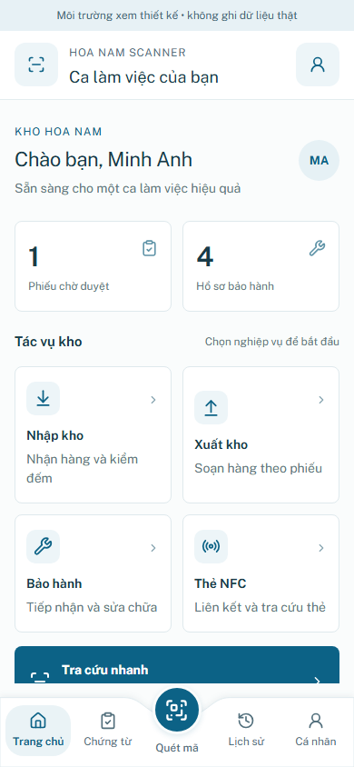
Sau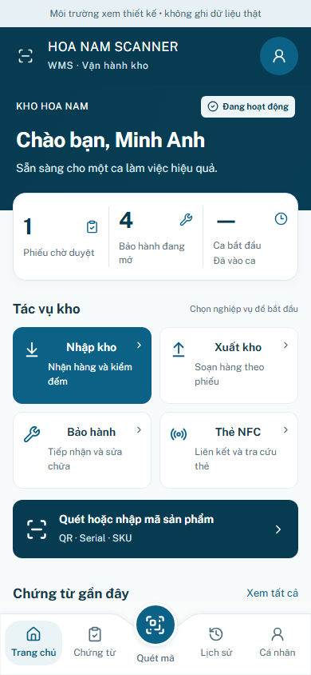
Danh sách chứng từ / cuộn tới cuối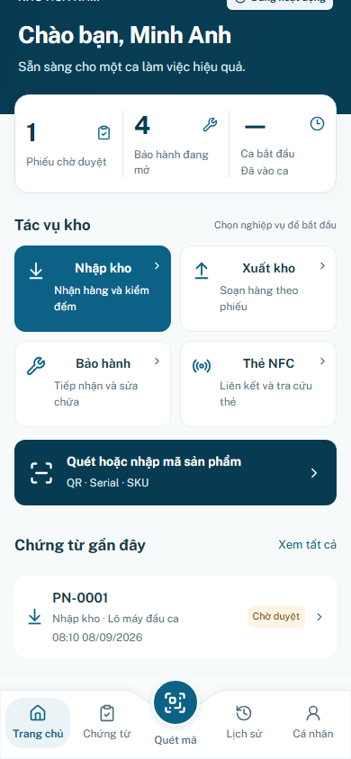
Kho tạm dừng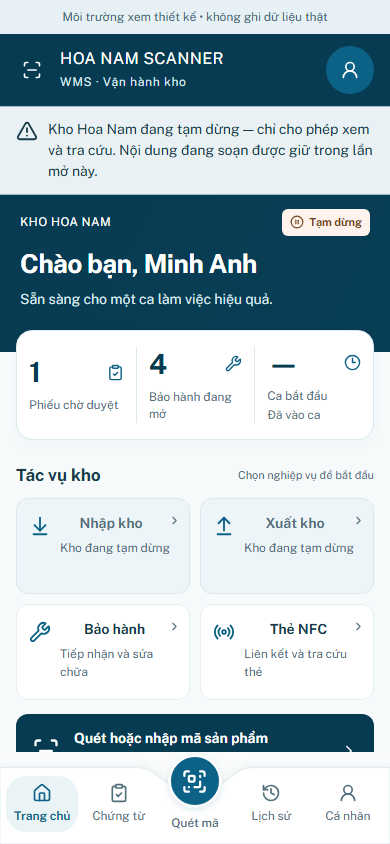
360px · BEFORE / AFTER
Trước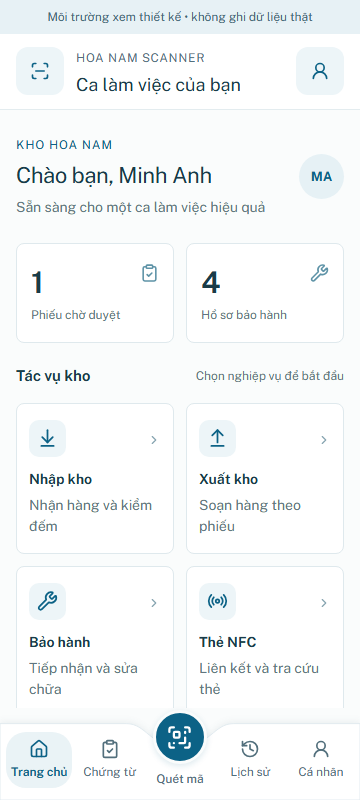
Sau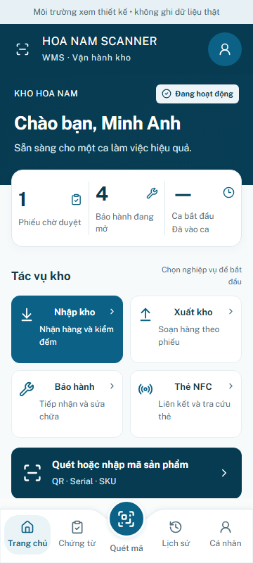
Danh sách chứng từ / cuộn tới cuối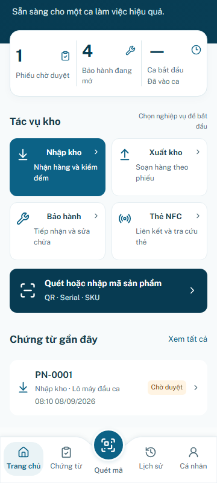
Kho tạm dừng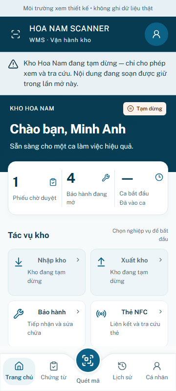
430px · BEFORE / AFTER
Trước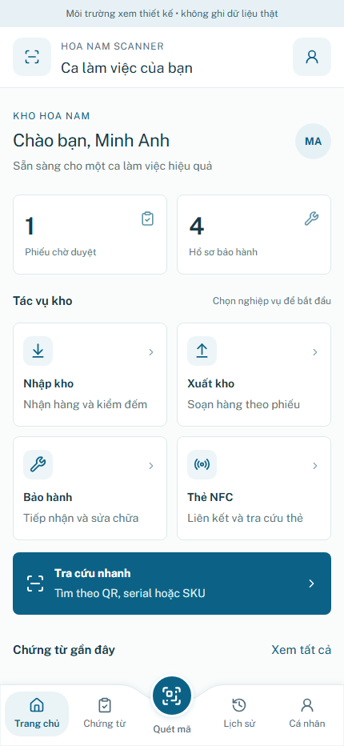
Sau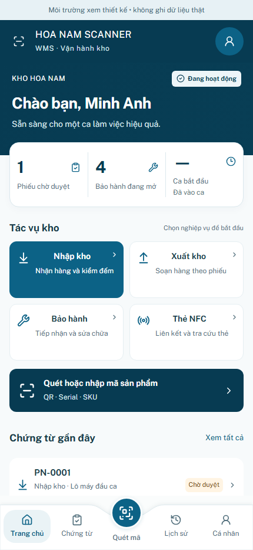
Danh sách chứng từ / cuộn tới cuối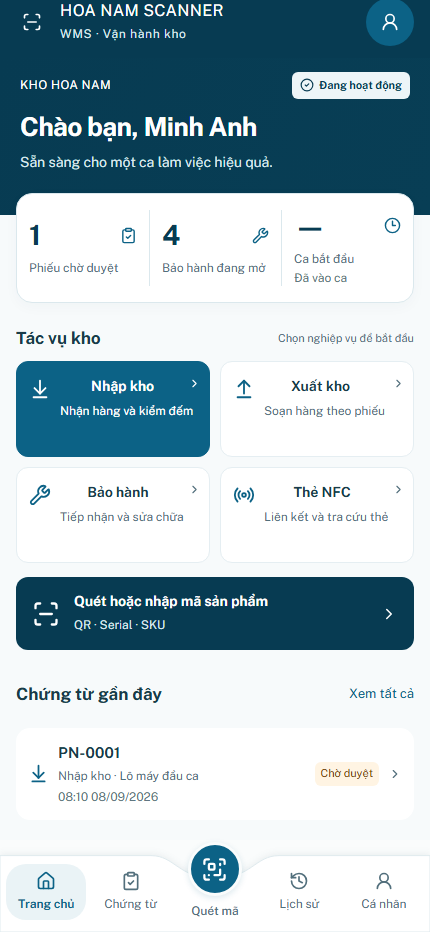
Kho tạm dừng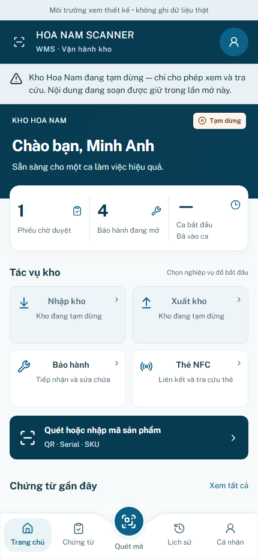
Kết quả QA Home · Dữ liệu/draft/auth regression · Shell containment regression
Giờ bắt đầu ca chưa có trong contract hiện tại: hiển thị — / Đã vào ca, không tạo giờ giả.